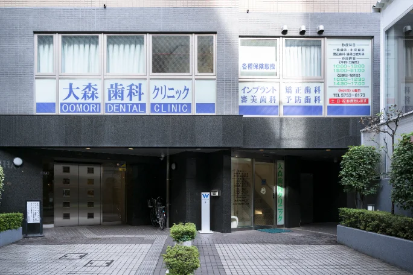
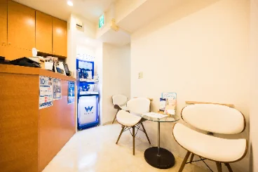
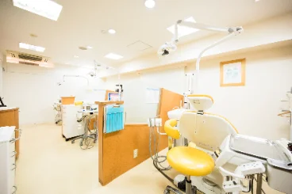
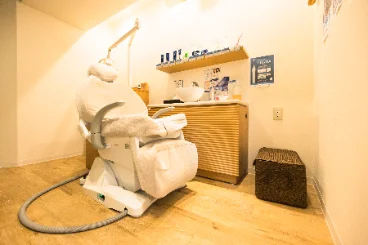
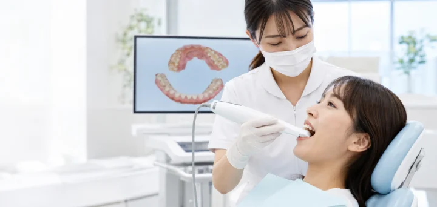

通いやすさと、説明のわかりやすさを
そのまま形にした医院です
大森駅から徒歩3分、ビル2階。待合から診療室、設備の選定にいたるまで、患者さんが不安になりやすい場面を減らすことを基準に整えています。
当院の考え方

治療の内容よりも先に、いま口の中で何が起きているのかを共有することを大切にしています。口腔内スキャナーと口腔内カメラで撮影した画像をモニターに映し、選択肢と費用、通院回数の見通しをお伝えしたうえで進め方を決めます。
削る量は最小限に。今ある歯をできるだけ残すことを前提に、必要な処置だけをご提案します。迷われた場合は、その日に決めていただく必要はありません。
院内のご案内
階段で上がってすぐが受付です。



設備紹介
口腔内スキャナー
粘土状の材料を使わず、小型カメラで歯型を読み取ります。嘔吐反射が出やすい方の負担を減らし、その場で3D画像を確認いただけます。
口腔内カメラ
ご自身では見えない奥歯や歯の裏側を拡大して映します。治療前後の状態を同じ画面で見比べていただけます。

当院を選ばれる理由
大森駅から
徒歩3分
徒歩3分
土曜も18時まで
診療
診療
画像を見ながらその場で説明
24時間WEB予約
初診の流れ
-
01
ご予約・受付。保険証と、服用中のお薬がわかるものをお持ちください。
-
02
問診とご相談。気になっている症状と、これまでの治療歴をうかがいます。
-
03
検査・撮影。口腔内スキャナーとレントゲンで、お口全体の状態を記録します。
-
04
治療計画のご説明。画像を見ながら選択肢と費用をお伝えし、進め方を決めます。